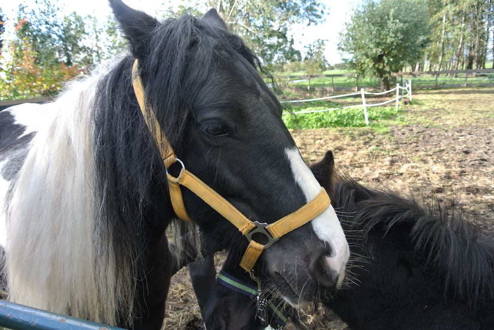
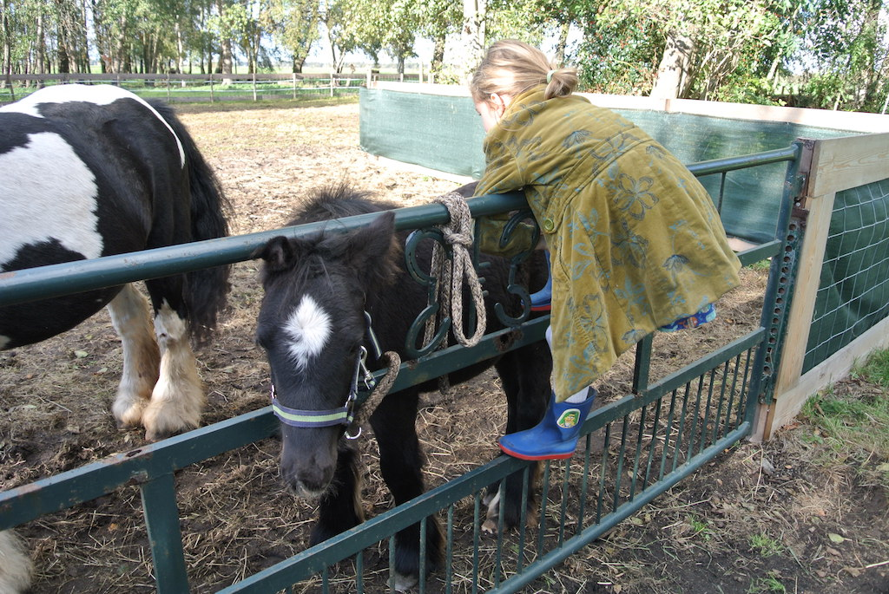
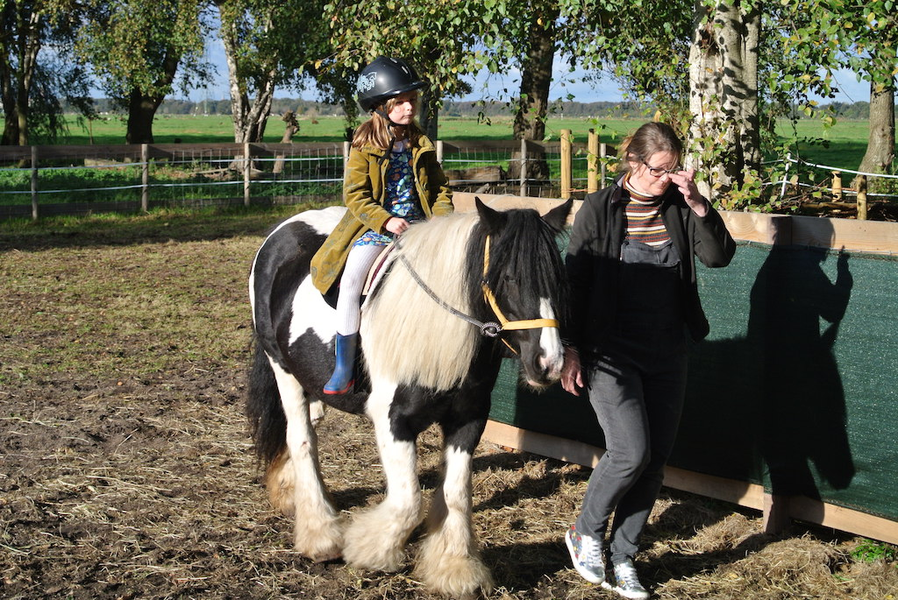
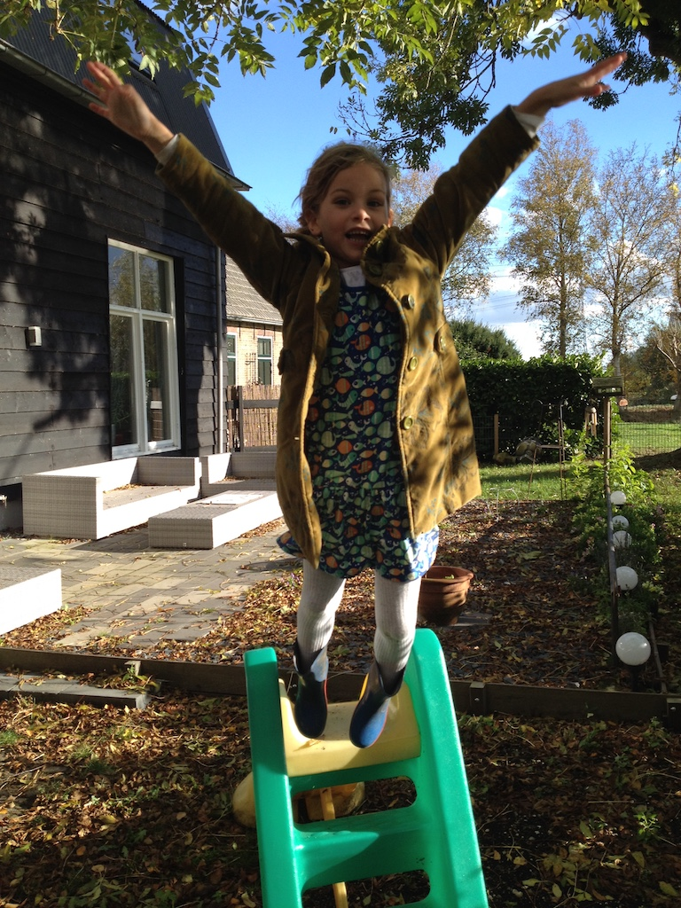
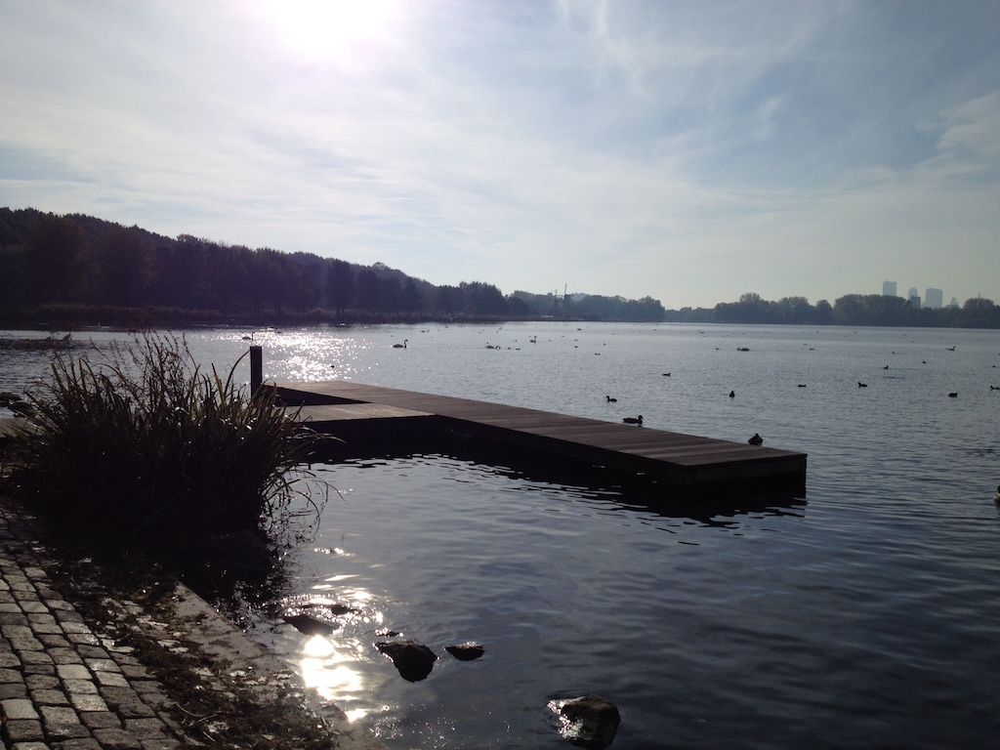
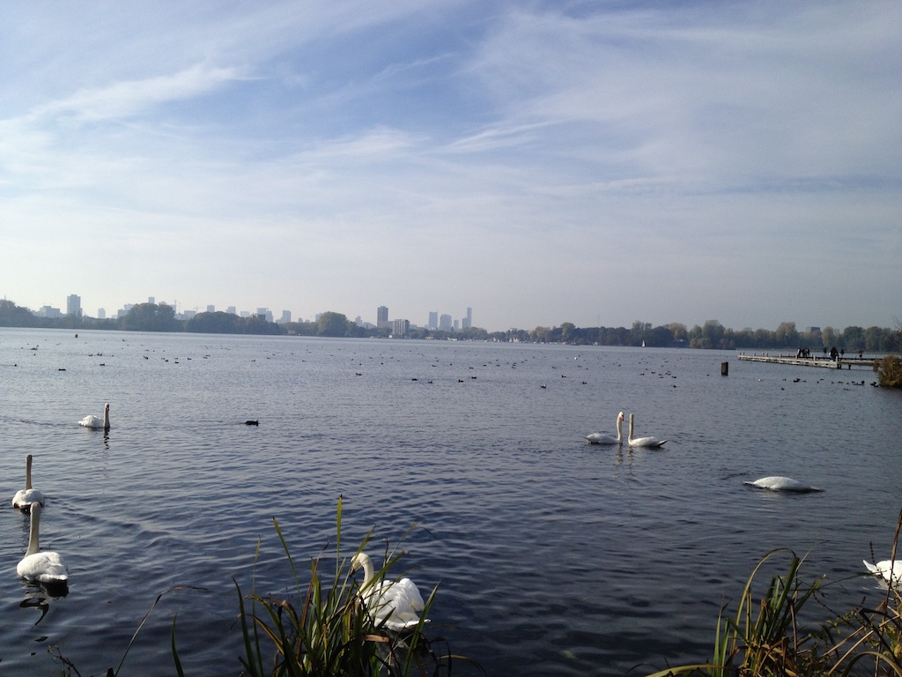
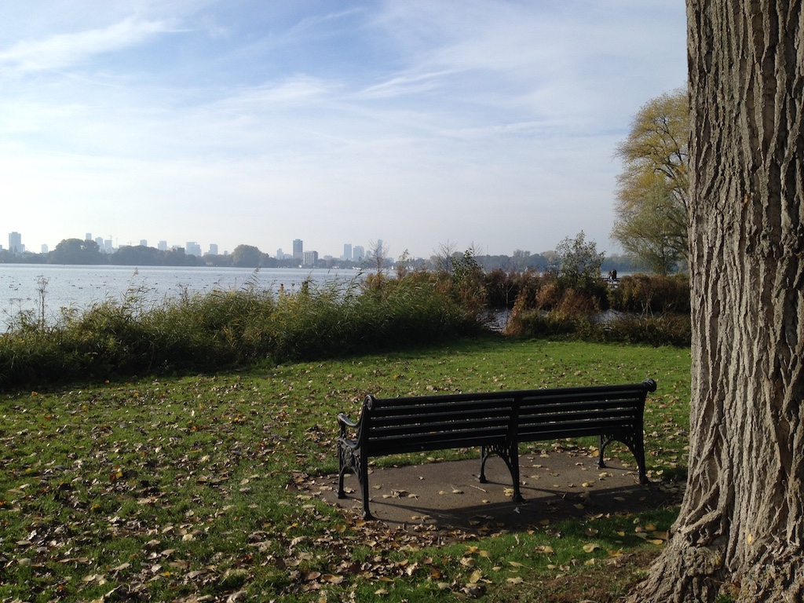
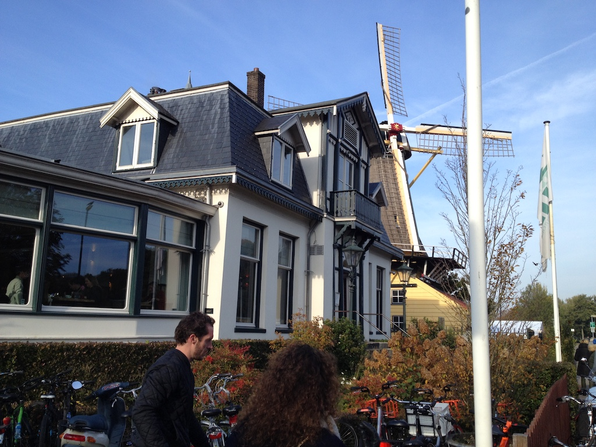
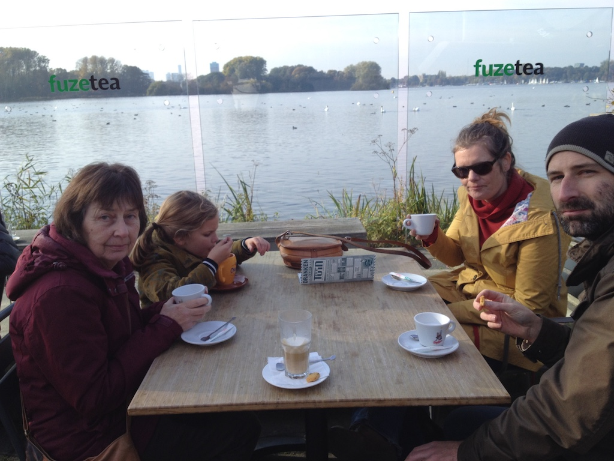

On the 1st November we left at ten to nine and were at Gatwick airport south terminal by ten o'clock to catch our flight to Schiphol. There, we had a little lunch before catching the train to Rotterdam, walking (in the rain) around the corner to Beurs and then the Metro to Capelsebrug, where Krista and Rowan met us. We were in Berkenwoude by about six.
The noise of the rain on the tin roof woke me a couple of times during the night, but we got up just before Krista took Rowan to school. After breakfast we took Flo for a walk 'around the block', which took about an hour. Angela then went with Krista to collect Rowan from school. It is a half day on Fridays. After lunch we went down the garden to see the ponies and Rowan rode Freda. Freda also pushed against the gate and broke off the tube holding the bolt. I screwed it back on, but she broke it again, so the gate remained tied up.
 We then took Rowan for her swimming lesson. After dinner we played a couple of games. During the evening my right ankle became very stiff. I probably strained it when we took Flo for a walk.
My ankle kept me awake for a while during the night and Rowan woke us on Saturday morning! However, my ankle was less swollen and, although not right, was not too much of a handicap. By the time that we got down (after a shower) Greet and Wim were there. We started with coffee and biscuits, then they went to work in the second stall of the stables and I re-attached the tube for the bolt on the paddock gate. I drilled out the existing screw holes to take two bolts and a longer screw. However, it is a bit wonky!
After a late lunch we mainly played with Rowan and then spoke with Victoria, Austin (who was still in bed when we called) and Juniper. Juniper had been unwell, but they were both tired after a couple of very late nights (even later than usual). Later Rowan helped Angela with her Dutch lessons.
We had a gentle start to a fine day on Sunday. Although it was cold it remained sunny all day. Paul took us all, including Flo, to a park near the centre of Rotterdam. The park surrounded a large lake on which people were sailing and there were plenty of wooded areas with good paths. There was also a children's playground and a couple of cafes. We stopped at one for lunch, sitting outside overlooking the lake.
    From the park we came back via Krimpen aan de Lek for coffee and cake with Greet and Wim. We sat in their relatively new garden room. When we got back we played games and had just a light snack.
Paul set off for work while we were eating breakfast. Then Krista took Rowan to School before taking us to Capelsebrug Metro station. We went to Rotterdam Centraal and caught the train to Schiphol. I had already checked in and the bag drop queue was quite short. However, the security queue was long, but moved quite quickly. We had lunch (even though Angela not feeling too well) and then caught the flight to Gatwick. The plane landed at three o'clock and by four we had got home.
© David James 2018 Last updated: 24th January 2019